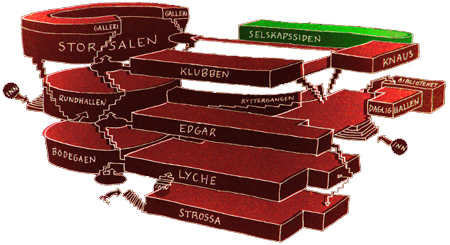

Selskapssiden
I tredje etasje på nordsiden av huset finner du Samfundets stilfulle cocktailbar. Baren har et gjennomført skandinavisk preg inspirert av hytteliv, mørk skog, jakt og fangst. På Selskapssiden er du omgitt av vedkubber, gevir og innrammede bilder på veggen.
Selskapssiden er stedet for lange drinker, korte drinker og shots av alle mulige slag. Ryktene sier at Selskapssiden har byens største utvalg av miksbar drikke og bartendere som vet nøyaktig hvordan de skal gjøre akkurat deg fornøyd.
Visste du at?
- Insert funfact here